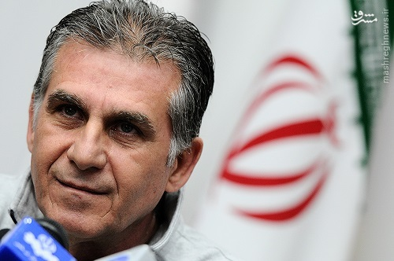

ما را چه به کارلوس؟
سرویس ورزشی «فردا»- فوتبال ایران روزهای عجیبی را با کارلوس کی روش تجربه می کند. یک روز دستور می دهند قراردادش لغو شود و به کشورش بازگردد؛ اما به یک باره همه چیز عوض می شود و دستور می رسد که بماند. یک مدیر اقتصادی از کی روش به عنوان مربی تمرین دهنده یاد می کند؛ اما به یک باره نظرها عوض می شود و تبدیل می شود به ستاره بخت فوتبال ما و ...
به گزارش مشرق اینها همه هست؛ اما کمتر پیش آمده که نگاهی دقیق و کارشناسی به حضور مرد پرتغالی صورت گیرد. اینکه نسبت فوتبال ما با کارولس کی روش چیست؟ آیا حضور او به پیشرفت فوتبال ما کمک کرده یا چنین اتفاقی روی نداده است؟ میلیون ها دلار و میلیاردها تومانی که به حساب این مربی واریز شده، چه عایدی برای فوتبال ما داشته است؟ و ... ده ها سوال که تا کنون پاسخی در بر نداشته است و باید بدان ها اندیشید. این گزارش در پی آن است تا نگاهی تحلیلی به این موضوع داشته باشد که آیا با کی روش به آرزوهایمان رسیده ایم یا خیر؛ البته از زوایای مختلف.
ما و یک جام جهانی ایده آل
برای رسیدن به تحلیلی جامع، مرحله اول مروری بر نتایج تیم ملی در دوران حضور کی روش است. تیم ملی با این مربی پرتغالی در جام جهانی کارنامه قابل قبولی را بر جای گذاشت. نحوه بازی شاگردان کارلوس در دو دیدار ابتدایی (آرژانتین و نیجربه) آنقدر درخشان بود که شکست همراه با بازی ضعیف مقابل بوسنی را پوشش دهد. این تیم در این رقابت ها حضور پرفروغی داشت و افکار عمومی نیز از آن راضی بودند. اوج رضایت مندی در بازی مقابل آرژانتین حاصل شد که ملی پوشان در آستانه کسب یک امتیاز، مقهور مسی و حرفه ای گری او شدند.
در ادامه، تیم ملی وارد جام ملت های آسیا شد. اگرچه شروع ما در این بازی ها چندان خوب نبود؛ اما هرچه گذشت، تیم منسجم تر و یکدست تر شد. تا در دیدار برابر عراق که شاهد یک قضاوت عجیب و مشکوک بودیم. تیم ملی که بازی را در دست داشت و به راحتی می توانست از سد عراق بگذرد، در پایان به دلیل 10 نفره شدن، موفق نشد تا مقابل حریف راه به جایی ببرد و حذف شد. البته، شاگردان کی روش در این میدان یک بازی جانانه و غیرتمندانه به نمایش گذاشتند که همین نیز بر میزان محبوبیت سرمربی افزود.
در این رابطه، باید اذعان داشت هرچه از حضور کی روش در فوتبال ایران گذشته، عملکرد فنی وی و تیمش وضعیت بهتری پیدا کرده است. این هم ریشه در نزدیک تر شدن شاگردانش به تفکراتش دارد که ناشی از تاکتیک پذیرتر شدن آنها در مقایسه با گذشته است.
یک مدیر با نمره بالا
مروری بر سال های قبل از حضور کی روش، کارنامه ای سراسر از بی انضباطی در تیم ملی است. به هم ریختگی تیم ملی به جایی رسیده بود که بازیکنان و مربیان ارتباط منفی با هم داشتند. تغییر مدام مربیان کار را به جایی رسانده بود که تیم ملی تبدیل به محله برو بیا شده بود. این اتفاقات کاریزمای مربیان را زیر سوال برده و منجر به تجزیه تیم ملی نیز شده بود. گروه گروه شدن موجب شده بود تا نتوان مدیریت صحیحی بر تیم داشت و هر چه می گذشت نیز بر دامنه این اختلافات و دو دستگی ها افزوده می شد.